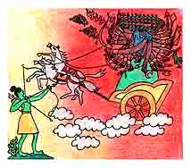
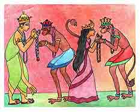

<html>
<!-- Mirrored from www.damodara.de/espaniol/html/jiva_tattva/Hanuman/Hanuman_12.htm by HTTrack Website Copier/3.x [XR&CO'2013], Sun, 23 Feb 2014 09:50:07 GMT -->
<head>
<title>La flecha magica y la muerte de Ravana</title>
<meta http-equiv="Content-Type" content="text/html; charset=iso-8859-1">
</head>

<body bgcolor="#FFFFFF" text="#000000">
<table width="45%" border="0" cellspacing="15" cellpadding="0" align="center" bordercolor="#FFFFFF" bgcolor="#FFFFFF" height="1170">
  <tr> 
    <td width="412" height="427" valign="top"> 
      <blockquote> 
        <div align="center"> 
          <p align="center"><font face="Comic Sans MS"><o:p></o:p>Entonces Hanuman 
            se acerc&oacute; a Rama y le susurr&oacute; en el o&iacute;do: El 
            punto d&eacute;bil de Ravana es su pie, y existe solamente una manera 
            segura de acabar con &eacute;l -con una flecha m&aacute;gica que el 
            tiene escondida en su palacio-</font></p>
          <p><font face="Comic Sans MS" size="3">Rama volte&oacute; a mirar a 
            Hanuman, pero &eacute;l ya volaba hacia el palacio de Ravana en busca 
            de la flecha m&aacute;gica, y cuando estuvo de vuelta le dijo a Rama:</font></p>
          <p><font face="Comic Sans MS" size="3">Aqu&iacute; tienes, esperemos 
            que funcione&#133;<br>
            Es nuestra &uacute;ltima oportunidad -respondi&oacute; Rama- mientras 
            tensaba su arco.</font></p>
          <p><font face="Comic Sans MS" size="3">Ravana se acercaba cada vez m&aacute;s, 
            echando fuego por sus diez narices y humo por sus veinte orejas. Rama 
            tom&oacute; fuerza y dispar&oacute;:</font></p>
          <p><font face="Comic Sans MS" size="3">&gt;--&iexcl;Z I N G-!-<b>&gt;</b></font></p>
          <p><font face="Comic Sans MS" size="3">La flecha vol&oacute; directamente 
            hacia el pie de Ravana hiri&eacute;ndolo mortalmente, de pronto se 
            escuch&oacute; un grito ensordecedor, entonces Ravana cay&oacute; 
            al suelo y muri&oacute;. </font></p>
        </div>
      </blockquote>
    </td>
  </tr>
  <tr> 
    <td valign="top" height="132" width="412"> 
      <div align="center"> 
        <p><a href="../../../images/galeria/colores/radha%20m%20gopal/index.html"></a></p>
        <p><font face="Comic Sans MS" color="#000000" size="2"><b>Rama dispar&oacute; 
          la flecha magica</b></font></p>
      </div>
    </td>
  </tr>
  <tr> 
    <td height="408" valign="top" width="412"> 
      <blockquote> 
        <div align="center"> 
          <p><font face="Comic Sans MS">Hanuman vol&oacute; al palacio de Ravana 
            para liberar a Sita, y luego la llev&oacute; de vuelta a los brazos 
            de Rama, quien la envolvi&oacute; tiernamente en un gran abrazo.</font></p>
          <p><font face="Comic Sans MS">Te extra&ntilde;&eacute; mucho -dijo Sita- 
            pero Hanuman siempre me dio esperanzas. Es por Hanuman, realmente 
            que ahora t&uacute; est&aacute;s sana y salva -dijo Rama-. No es nada 
            -dijo Hanuman t&iacute;midamente, mientras miraba hacia el suelo. 
            Ven Sugriva, es mejor que nos vayamos ahora.<br>
            No esperen -respondi&oacute; Rama- Ustedes han hecho mucho por nosotros 
            y queremos agradecerlo.</font></p>
          <p><font face="Comic Sans MS">Rama y Sita, les dieron a Hanuman y Sugriva 
            algunas joyas como regalos: &quot;Desde ahora ustedes ser&aacute;n 
            nuestros hermanos, por favor acepten nuestra amistad&quot; Hanuman 
            acept&oacute;, muy feliz, y continu&oacute; as&iacute; siendo un eterno 
            y fiel servidor de Sita y Rama. </font></p>
        </div>
      </blockquote>
    </td>
  </tr>
  <tr> 
    <td height="420" valign="top" width="412"> 
      <div align="center"><a href="../../../images/galeria/colores/radha%20m%20gopal/index.html"></a> 
      </div>
      <div align="center"> 
        <p><font face="Comic Sans MS" size="2"><b>Sita y Rama dan como agradecimiento 
          joyas a Hanuman y Sugriva</b></font></p>
        <p>&nbsp;</p>
        <p>&nbsp;</p>
        <p><font face="Comic Sans MS">SITA RAMA Y HANUMAN KI JAY!!!</font></p>
        <p><font face="Comic Sans MS">HARI BOLO!!!</font></p>
      </div>
    </td>
  </tr>
  <tr> 
    <td height="1081" valign="top" width="412"> 
      <div align="center"><font face="Comic Sans MS" size="3">Esta historia deriva 
        del poema &eacute;pico hind&uacute; &quot;El Ramayana&quot;, que tiene 
        m&aacute;s de 4,000 a&ntilde;os de antig&uuml;edad. Este poema constituye 
        en su gran parte, las bases de religi&oacute;n y cultura Hind&uacute;, 
        as&iacute; como tambi&eacute;n las principales pautas para la adoraci&oacute;n 
        de dioses y semidioses. </font> 
        <p><font face="Comic Sans MS" size="3">HANUMAN: Un semidi&oacute;s ideado 
          para ser el mejor amigo y h&eacute;roe, poseedor de mucho amor, fuerza, 
          inteligencia y magia.</font></p>
        <p><font face="Comic Sans MS" size="3">INDRA: Controlador de la atm&oacute;sfera 
          y tambi&eacute;n del <br>
          clima.</font></p>
        <p><font face="Comic Sans MS" size="3">RAMA: Encarnaci&oacute;n de Visnu, 
          Rama es el personaje <br>
          principal del Ramayana, el representa la santidad y pureza.</font></p>
        <p><font face="Comic Sans MS" size="3">RAVANA: Demonio de diez cabezas, 
          astuto y malvado. <br>
          Rey de Lanka (actualmente Sri Lanka).</font></p>
        <p><font face="Comic Sans MS" size="3">SITA: Adorada como diosa, Sita 
          es considerada <br>
          el modelo ideal para muchas mujeres: bella, inteligente y devota de 
          su esposo.</font></p>
        <p><font face="Comic Sans MS" size="3">SUGRIVA: Rey de los monos, leal 
          y servicial. <br>
          Hanuman lider&oacute; su ej&eacute;rcito y era su consejero personal.</font></p>
        <p><font face="Comic Sans MS" size="3">VAYU: El semidios del viento, Vayu 
          controla el <br>
          Hemisferio Norte y viaja en una carroza dorada guiada por 1,000 caballos. 
          </font></p>
        <p><font face="Comic Sans MS" size="3"><br>
          <a href="../../autores/artistas.html">Agradecimientos</a></font></p>
        <p><font face="Comic Sans MS" size="3">Para mayor informaci&oacute;n:</font></p>
        <p><font face="Comic Sans MS" size="3"><a href="mailto:info@damodara.de">correo 
          a damodara</a></font></p>
        <p><font face="Comic Sans MS" size="3">Si quieres tener esta historia 
          en formato de libro (word document) has click aqui: <a href="../../download/libros.html">Hanuman</a> 
          (614 kb)</font></p>
        <p><font face="Comic Sans MS" size="3">Si quieres ver la version en Blanco 
          y negro de todos los dibujos de esta historia listos para imprimir ve 
          a: <a href="../../../images/galeria/a_dibujar/hanuman/index.html">Hanuman_dibujos</a></font></p>
        <p><font face="Comic Sans MS" size="3">Si quieres ver un juego de Sita 
          Ram y Hanuman, ve a: <a href="../../juegos.html">RAMA</a></font></p>
        <p><font size="3" face="Comic Sans MS">Mas <a href="../../juegos.html">JUEGOS...</a></font></p>
      </div>
    </td>
  </tr>
  <tr>
    <td height="45" valign="top" bgcolor="#FFFFFF" width="412"> 
      <div align="center"><font face="Comic Sans MS"><a href="Hanuman_11.html"></a><a href="Hanuman.html"></a> 
        <a href="../../../../index_02.html"></a></font></div>
    </td>
  </tr>
</table>
<p>&nbsp;</p>
<p>&nbsp;</p>
</body>
<!-- Mirrored from www.damodara.de/espaniol/html/jiva_tattva/Hanuman/Hanuman_12.htm by HTTrack Website Copier/3.x [XR&CO'2013], Sun, 23 Feb 2014 09:50:10 GMT -->
</html>
